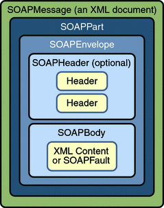
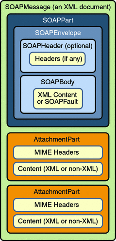

Overview of SAAJ
This section presents a high-level view of how SAAJ messaging works and explains concepts in general terms. Its goal is to give you some terminology and a framework for the explanations and code examples that are presented in the tutorial section.
The overview looks at SAAJ from two perspectives: messages and connections.
SAAJ Messages
SAAJ messages follow SOAP standards, which prescribe the format for messages and also specify some things that are required, optional, or not allowed. With the SAAJ API, you can create XML messages that conform to the SOAP 1.1 or 1.2 specification and to the WS-I Basic Profile 1.1 specification simply by making Java API calls.
The Structure of an XML Document
An XML document has a hierarchical structure made up of elements, subelements, subsubelements, and so on. You will notice that many of the SAAJ classes and interfaces represent XML elements in a SOAP message and have the word element or SOAP (or both) in their names.
An element is also referred to as a node. Accordingly, the SAAJ API has the interface Node, which is the base class for all the classes and interfaces that represent XML elements in a SOAP message. There are also methods such as SOAPElement.addTextNode, Node.detachNode, and Node.getValue, which you will see how to use in the tutorial section.
What Is in a Message?
The two main types of SOAP messages are those that have attachments and those that do not.
Messages with No Attachments
The following outline shows the very high-level structure of a SOAP message with no attachments. Except for the SOAP header, all the parts listed are required to be in every SOAP message.
I. SOAP message A. SOAP part 1. SOAP envelope a. SOAP header (optional) b. SOAP bodyThe SAAJ API provides the SOAPMessage class to represent a SOAP message, the SOAPPart class to represent the SOAP part, the SOAPEnvelope interface to represent the SOAP envelope, and so on. Figure 19-1 illustrates the structure of a SOAP message with no attachments.
Figure 19-1 SOAPMessage Object with No Attachments
Note - Many SAAJ API interfaces extend DOM interfaces. In a SAAJ message, the SOAPPart class is also a DOM document. See SAAJ and DOM for details.
When you create a new SOAPMessage object, it will automatically have the parts that are required to be in a SOAP message. In other words, a new SOAPMessage object has a SOAPPart object that contains a SOAPEnvelope object. The SOAPEnvelope object in turn automatically contains an empty SOAPHeader object followed by an empty SOAPBody object. If you do not need the SOAPHeader object, which is optional, you can delete it. The rationale for having it automatically included is that more often than not you will need it, so it is more convenient to have it provided.
The SOAPHeader object can include one or more headers that contain metadata about the message (for example, information about the sending and receiving parties). The SOAPBody object, which always follows the SOAPHeader object if there is one, contains the message content. If there is a SOAPFault object (see Using SOAP Faults), it must be in the SOAPBody object.
Messages with Attachments
A SOAP message may include one or more attachment parts in addition to the SOAP part. The SOAP part must contain only XML content; as a result, if any of the content of a message is not in XML format, it must occur in an attachment part. So if, for example, you want your message to contain a binary file, your message must have an attachment part for it. Note that an attachment part can contain any kind of content, so it can contain data in XML format as well. Figure 19-2 shows the high-level structure of a SOAP message that has two attachments.
Figure 19-2 SOAPMessage Object with Two AttachmentPart Objects
The SAAJ API provides the AttachmentPart class to represent an attachment part of a SOAP message. A SOAPMessage object automatically has a SOAPPart object and its required subelements, but because AttachmentPart objects are optional, you must create and add them yourself. The tutorial section walks you through creating and populating messages with and without attachment parts.
If a SOAPMessage object has one or more attachments, each AttachmentPart object must have a MIME header to indicate the type of data it contains. It may also have additional MIME headers to identify it or to give its location. These headers are optional but can be useful when there are multiple attachments. When a SOAPMessage object has one or more AttachmentPart objects, its SOAPPart object may or may not contain message content.
SAAJ and DOM
The SAAJ APIs extend their counterparts in the org.w3c.dom package:
The Node interface extends the org.w3c.dom.Node interface.
The SOAPElement interface extends both the Node interface and the org.w3c.dom.Element interface.
The SOAPPart class implements the org.w3c.dom.Document interface.
The Text interface extends the org.w3c.dom.Text interface.
Moreover, the SOAPPart of a SOAPMessage is also a DOM Level 2 Document and can be manipulated as such by applications, tools, and libraries that use DOM. For details on how to use DOM documents with the SAAJ API, see Adding Content to the SOAPPart Object and Adding a Document to the SOAP Body.
SAAJ Connections
All SOAP messages are sent and received over a connection. With the SAAJ API, the connection is represented by a SOAPConnection object, which goes from the sender directly to its destination. This kind of connection is called a point-to-point connection because it goes from one endpoint to another endpoint. Messages sent using the SAAJ API are called request-response messages. They are sent over a SOAPConnection object with the call method, which sends a message (a request) and then blocks until it receives the reply (a response).
SOAPConnection Objects
The following code fragment creates the SOAPConnection object connection and then, after creating and populating the message, uses connection to send the message. As stated previously, all messages sent over a SOAPConnection object are sent with the call method, which both sends the message and blocks until it receives the response. Thus, the return value for the call method is the SOAPMessage object that is the response to the message that was sent. The request parameter is the message being sent; endpoint represents where it is being sent.
SOAPConnectionFactory factory = SOAPConnectionFactory.newInstance();
SOAPConnection connection = factory.createConnection();
. . .// create a request message and give it content
java.net.URL endpoint = new URL("http://fabulous.com/gizmo/order");
SOAPMessage response = connection.call(request, endpoint);Note that the second argument to the call method, which identifies where the message is being sent, can be a String object or a URL object. Thus, the last two lines of code from the preceding example could also have been the following:
String endpoint = "http://fabulous.com/gizmo/order"; SOAPMessage response = connection.call(request, endpoint);
A web service implemented for request-response messaging must return a response to any message it receives. The response is a SOAPMessage object, just as the request is a SOAPMessage object. When the request message is an update, the response is an acknowledgment that the update was received. Such an acknowledgment implies that the update was successful. Some messages may not require any response at all. The service that gets such a message is still required to send back a response because one is needed to unblock the call method. In this case, the response is not related to the content of the message; it is simply a message to unblock the call method.
Now that you have some background on SOAP messages and SOAP connections, in the next section you will see how to use the SAAJ API.